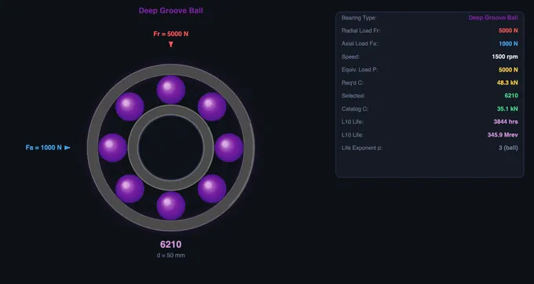
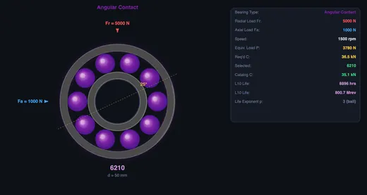
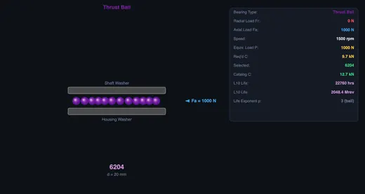

Bearing Selection Calculator
Real SKF Bearing Finder • ISO 281 SKF Rating Life (L10m) • Lubrication κ • Load-from-Power • Designation Decoder — Find Bearing • Calculators • Explore • Practice • Quiz
3D Model — Machine Design: Rolling Bearings
Interactive 3D model of this apparatus. Pick a component on the right, then drag to rotate · scroll to zoom · right-drag to pan.
⚙ SKF Rating Life — advanced (ISO 281:2007) — reliability, contamination & lubrication
κ = viscosity ratio ν/ν₁ (below 1 = poor film, ≥4 = full film). Use the Calculators mode to compute κ from oil grade, temperature & speed.
1 Overview
The SKF Bearing Selection Trainer guides you through the complete bearing selection process: specifying loads and speed, calculating the required dynamic load rating, selecting the appropriate ball bearing or roller bearing type, and verifying L10 life. Its Find Bearing mode searches a real SKF product-table dataset spanning 8 bearing families — deep groove ball, angular contact ball, self-aligning ball, cylindrical roller, tapered roller, spherical roller, needle roller, and thrust — to recommend an actual catalog designation for your requirements.
Unlike a simple calculator, this trainer includes an animated bearing cross-section, a built-in bearing catalogue for automatic size selection, and the designation system (ISO nomenclature) for understanding bearing numbers like 6205. It teaches you to consider radial and axial load combinations, speed factor limitations, misalignment tolerance, and practical factors like the bearing bore-to-shaft fit.
Use the SI / Imperial toggle in the top bar to switch every value between metric and US units — loads (N ↔ lbf), load ratings (kN ↔ lbf), dimensions (mm ↔ in), mass (kg ↔ lb), temperature (°C ↔ °F), power (kW ↔ hp) and torque. All calculations run internally in SI; the toggle only changes how results are displayed.
2 Find Bearing — Requirement-Based Search
The trainer opens directly into Find Bearing mode — there is no separate "Simulate" step. Set a minimum bore (or leave it as "any"), radial load Fr, axial load Fa, speed, desired L10 life, and any expected shaft misalignment in degrees. The canvas above updates live as you move any slider, always showing the current best-match bearing's animated cross-section. Click the 🔍 Find Bearing button inside the canvas card any time to refresh the full results table below it.
- The engine checks all 8 bearing families against your requirements: it excludes types that cannot carry the load direction present (e.g. cylindrical roller bearings for axial load, thrust bearings for radial load) or that lack enough misalignment tolerance.
- For each remaining type it searches real SKF catalog sizes and returns the smallest one whose dynamic load rating and speed rating satisfy your desired life — ranked with the lightest suitable option marked Best Match.
- Types that don't qualify are listed under Not Suitable with the specific reason (load direction, speed, or misalignment).
- Try the six application presets — Electric Motor, Gearbox Shaft, Machine Spindle, Crane Hook, Conveyor Idler (Misaligned), and Wind Turbine Shaft — to see how different load/speed/misalignment combinations steer the recommendation toward a different bearing family.
- Pick a Machine type from the dropdown to auto-set a typical required life (e.g. electric motors 10 000–25 000 h, wind-turbine main shaft 30 000–100 000 h), straight from the SKF specification-life guideline.
3 SKF Rating Life — L10m (ISO 281:2007)
Open the SKF Rating Life — advanced panel to move beyond basic L10 to the modern SKF / ISO 281:2007 modified rating life: L10m = a₁ · aSKF · L10.
- Reliability a₁ — choose 90–99% reliability; a₁ = 1, 0.64, 0.55, 0.47, 0.37, 0.25. Higher reliability means shorter rated life for the same bearing.
- Contamination ηc — from extreme cleanliness (1.0) down to severe contamination (0.05). Dirt causes surface indentations that raise local stress and cut fatigue life.
- Lubrication κ — the viscosity ratio (0.1–4). Below 1 the oil film is too thin; 1–4 is the good regime.
- These feed the life modification factor aSKF, computed from the ISO 281 curves using each bearing's real fatigue load limit Pu. aSKF spans 0.1 (dirty, poor film) to 50 (clean, full film) — which is why lubrication and cleanliness often matter more than load.
- Each result card also shows the static safety factor s₀ = C₀/P₀ and flags a low static safety or a below-minimum-load (skidding) risk.
4 Calculators — Lubrication κ, Load-from-Power, Decoder
The Calculators mode adds three engineering utilities:
- Lubrication κ — enter bore, OD, speed, oil ISO VG grade and operating temperature. It computes the rated viscosity ν₁ (from bearing mean diameter & speed), the actual oil viscosity ν at temperature (Walther equation), and the ratio κ = ν/ν₁ with its lubrication regime. "Apply κ to Find Bearing" pushes the value straight into the rating-life calculation.
- Load from transmitted power — enter power, speed, pitch diameter and drive type (spur/helical gear, V-belt, flat belt, chain). It derives the torque, tangential force and the resulting radial & axial bearing loads (with gear/belt and duty factors), which you can apply directly to the Find Bearing inputs.
- Designation decoder — type any SKF designation (e.g. 6205-2RS1 C3, NU 210 ECP, 7208 BECBP) to decode the bearing type, series, bore diameter and every suffix (seals, shields, clearance class, cage material, precision, etc.).
5 Watching the Motion
The canvas shows an animated cross-section of the currently best-matching bearing family, with rolling elements and raceways rendered live from your requirement inputs. Badges above the results panel display L10 life, equivalent load P, required dynamic load rating C, and the recommended bearing size at a glance.
The equivalent load P = X·Fr + Y·Fa uses bearing-type-specific factors (deep groove ball, angular contact, self-aligning, tapered roller, etc. each have their own X, Y and e values). The required C is back-calculated from your desired life: C = P × (60 × n × Lh / 10^6)^(1/p). The trainer then selects the smallest real catalog bearing with C ≥ required C and a speed rating ≥ your operating speed.
6 Geometry & Theory
Study 12 concepts across Bearing Types, Nomenclature, and Life Calculation categories. Learn bearing designation decoding (e.g., 6205 = deep groove, medium series, 25mm bore), X and Y factor tables, static vs dynamic load ratings, and bearing selection workflow.
7 Try a Problem
Practice covers equivalent load, required C rating, L10 life, bearing designation decoding, and selection problems. Quiz provides 5 randomised questions from a pool of 15.
8 Design Notes
- For bore codes 04 and above, multiply by 5 to get bore diameter in mm: code 05 = 25 mm, code 10 = 50 mm.
- Cylindrical roller bearings carry much higher radial loads but typically cannot support axial loads.
- Angular contact bearings excel at combined radial-axial loading and are preferred for machine spindles.
- Always check that the selected bearing's speed rating exceeds your operating RPM.
- Use presets to see how different applications (motor, gearbox, spindle) lead to different bearing types and sizes.
- The static load rating C0 matters for bearings that are stationary or slowly rotating under load.
SKF Bearing Selection Trainer — Understanding L10 Life, Dynamic Load Rating and Bearing Types

A rolling-element bearing is one of the most critical components in any rotating machine. Bearings reduce friction between a rotating shaft and its housing, support radial and axial loads, and maintain precise shaft positioning. Correct bearing selection is essential for machine reliability, and it depends on understanding load ratings, equivalent loads, and bearing life calculations defined by international standards such as ISO 281.
Types of Rolling Bearings
Deep groove ball bearings are the most widely used bearing type. They accommodate both radial and moderate axial loads in either direction and are suitable for high-speed applications. Their simple design makes them economical and low-maintenance. Cylindrical roller bearings feature line contact between rollers and raceways, giving them much higher radial load capacity than ball bearings of the same size. However, standard designs like the NU type can only carry radial loads. Angular contact ball bearings have raceways offset in the inner and outer rings, allowing them to support combined radial and axial loads. They are commonly used in machine tool spindles and automotive wheel hubs. Thrust ball bearings are designed exclusively for axial loads and are used in applications such as crane hooks, turntables, and automotive clutch release mechanisms.


Finding a Real Bearing from Your Requirements
Beyond the four bearing types animated in Simulate mode, the trainer's Find Bearing engine draws on a curated dataset of real SKF product-table entries covering eight bearing families: deep groove ball, angular contact ball (40° contact angle), self-aligning ball, cylindrical roller, tapered roller, spherical roller, needle roller, and thrust ball/roller bearings. Given a radial load, axial load, speed, desired L10 life and any misalignment allowance, it checks which families can physically carry the load direction and misalignment, computes the required dynamic load rating for each, and returns the smallest catalog size that satisfies it — with the lightest suitable option marked as the best match. Self-aligning ball and spherical roller bearings are automatically favoured when misalignment tolerance is required, since their spherical outer raceway compensates for shaft deflection that would overload a rigid bearing.
SKF Rating Life — the ISO 281:2007 Method
The classic L10 formula only considers load and speed, but real bearing life is dominated by lubrication and cleanliness. The SKF rating life (also called the modified rating life in ISO 281:2007) captures this with L10m = a1 · aSKF · L10. The reliability factor a1 scales life for reliability above 90% (a1 = 1, 0.64, 0.55, 0.47, 0.37, 0.25 for 90–99%). The life modification factor aSKF is read from the ISO 281 curves as a function of the viscosity ratio κ, the contamination factor ηc, and the ratio of the bearing's fatigue load limit Pu to the equivalent load P. It ranges from about 0.1 for a dirty, poorly lubricated bearing up to a cap of 50 for a clean, full-film installation — a 500-fold spread that explains why two identical bearings can have wildly different service lives. This trainer computes aSKF from the real published Pu value of each SKF bearing, and also reports the static safety factor s0 = C0/P0 and warns about minimum-load (skidding) conditions.
Lubrication, Load Estimation and Designation Decoding
The Calculators mode bundles three engineering utilities that support the selection process. The lubrication κ calculator derives the viscosity ratio κ = ν/ν1 from the oil's ISO VG grade, the operating temperature (via the Walther viscosity–temperature equation), and the bearing's mean diameter and speed — then classifies the regime as boundary, mixed or full-film lubrication. The load-from-power calculator converts transmitted power and shaft speed into torque, tangential force and the resulting radial and axial bearing loads for spur or helical gears, V-belts, flat belts and chain drives, applying the appropriate gear/belt and duty factors. The designation decoder parses any SKF bearing number into its type, series, bore diameter and full suffix meaning (seals, shields, internal clearance class, cage material and precision grade).
Bearing Nomenclature
Bearing designations follow ISO standards. For example, in the designation 6205, the first digit "6" indicates a deep groove ball bearing, "2" denotes the width and diameter series (medium), and "05" is the bore code. For bore codes 04 and above, multiply the code by 5 to get the bore diameter in millimetres: 05 × 5 = 25 mm. Special codes apply for smaller bores: 00 = 10 mm, 01 = 12 mm, 02 = 15 mm, and 03 = 17 mm. Cylindrical roller bearings use prefixes like NU, NJ, or NUP to indicate the ring configuration.
L10 Bearing Life Calculation
The basic rating life L10 is the number of revolutions (or hours at a given speed) that 90% of a group of apparently identical bearings will complete or exceed before the first evidence of fatigue appears. The fundamental formula is L10 = (C/P)p in millions of revolutions, where C is the basic dynamic load rating, P is the equivalent dynamic bearing load, and p is the life exponent (3 for ball bearings, 10/3 for roller bearings). To convert to hours: Lh = (L10 × 106) / (60 × n), where n is the rotational speed in RPM.
Equivalent Dynamic Bearing Load
When a bearing carries both radial load Fr and axial load Fa, these must be combined into an equivalent dynamic bearing load using the formula P = X·Fr + Y·Fa. The factors X and Y depend on the bearing type and the ratio Fa/Fr. For deep groove ball bearings, if the axial-to-radial ratio is below a threshold (e), the axial load has negligible effect and P simply equals Fr. Above that threshold, typical values are X = 0.56 and Y = 1.63.
How to Use This Trainer
The trainer opens straight into Find Bearing mode: set radial load, axial load, speed, desired life, minimum bore and misalignment (or pick an application preset), and the animated bearing cross-section above updates live to show the current best match, with badges for equivalent load, required dynamic load rating, and actual L10 life. Click the Find Bearing button inside the canvas card to refresh the full comparison table showing every qualifying bearing family from the real SKF catalog dataset. Switch to Explore mode to study 12 bearing concepts with formulas and worked examples. Practice mode generates random calculation problems with step-by-step solutions, and Quiz tests your knowledge with 5 questions per session covering both conceptual and numerical topics.
Who Uses This Trainer?
This bearing selection trainer is designed for mechanical engineering students, maintenance technicians, machine design engineers, and anyone studying bearing technology. It provides an interactive, visual understanding of bearing selection without requiring physical components or laboratory equipment, making it ideal for classroom instruction, self-study, and exam preparation.
Explore Related Simulators
If you found this Bearing Selection simulator helpful, explore our Shaft Torsion simulator, Tolerance & Fits calculator, Gear Trains simulator, and Friction simulator for more hands-on practice.